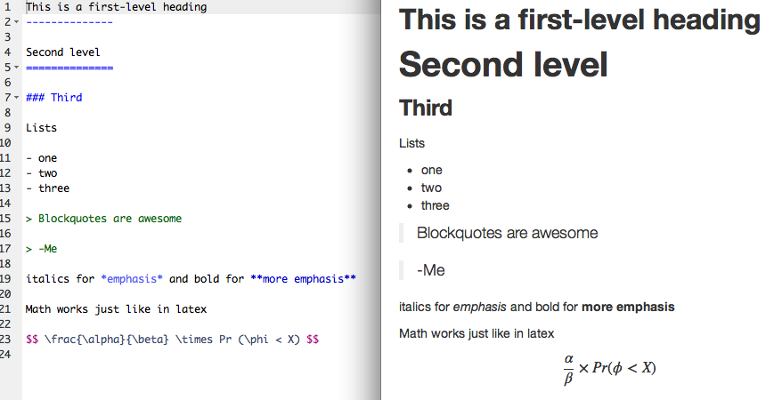
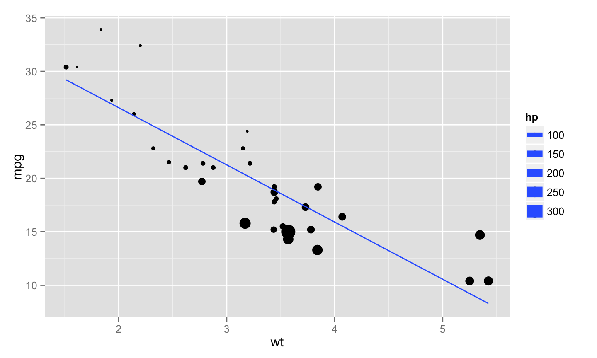

June 10, 2014
Introduction
Scientific Pathway
Scientific Cycle
Where do we fit in?
Tools to make our lives easier
Statisticians' Role
Data analysis
Goal: avoid making arbitrary/data-driven decisions that go undocumented or unreported
Two of my favorite tools
knit (weave) data analysis code to the report
track versions and collaborate over countless iterations
knitr
Programs are meant to be read by humans and only incidentally for computers to execute.
Motivation
- Cut and paste for report production is not a viable method
- tedious
- slow
- error-prone
- Incorporate analysis code into text documents
knitto create results- no extra steps to get desired output
- post-process to get any type of output format
- Literate documents
- Code creates results to inform report
- Prose surrounding code informs analysis
The importance of text
- Text is future-proof
- No worries about
.doc\(\rightarrow\).docx - Cross-platform
- Useful tools exist to track line-by-line changes in text
(git)
- No worries about
- Our requirements
- Text doc should stand on its own
- Minimal, semantic markup
- Applies to code also
Markdown
Plain-text formatting. Indicate what elements represent, not how they should look. Minimal, yet flexible, html is interpreted correctly.
Contrast with html
… and tex
Incorporating code chunks
Three backticks:
```{r my-first-chunk, results='asis'}
## code goes in here and gets evaluated
```
See http://yihui.name/knitr/options#chunk_options for all available options.
Inline code uses single backticks
Here I am using `#r rnorm(1)` to generate a random digit: -0.316. (Omit the pound sign)
Results, raw output
Raw output using the mtcars dataset:
```{r mtcars-example}
summary(lm(mpg ~ hp + wt, data = mtcars))
```
## ## Call: ## lm(formula = mpg ~ hp + wt, data = mtcars) ## ## Residuals: ## Min 1Q Median 3Q Max ## -3.941 -1.600 -0.182 1.050 5.854 ## ## Coefficients: ## Estimate Std. Error t value Pr(>|t|) ## (Intercept) 37.22727 1.59879 23.28 < 2e-16 *** ## hp -0.03177 0.00903 -3.52 0.0015 ** ## wt -3.87783 0.63273 -6.13 1.1e-06 *** ## --- ## Signif. codes: 0 '***' 0.001 '**' 0.01 '*' 0.05 '.' 0.1 ' ' 1 ## ## Residual standard error: 2.59 on 29 degrees of freedom ## Multiple R-squared: 0.827, Adjusted R-squared: 0.815 ## F-statistic: 69.2 on 2 and 29 DF, p-value: 9.11e-12
Results, a table
Since markdown interprets html, we can use kable to generate html tables from R
```{r table-example, results='asis'}
kable(head(mtcars))
```
| mpg | cyl | disp | hp | drat | wt | qsec | vs | am | gear | carb | |
|---|---|---|---|---|---|---|---|---|---|---|---|
| Mazda RX4 | 21.0 | 6 | 160 | 110 | 3.90 | 2.620 | 16.46 | 0 | 1 | 4 | 4 |
| Mazda RX4 Wag | 21.0 | 6 | 160 | 110 | 3.90 | 2.875 | 17.02 | 0 | 1 | 4 | 4 |
| Datsun 710 | 22.8 | 4 | 108 | 93 | 3.85 | 2.320 | 18.61 | 1 | 1 | 4 | 1 |
| Hornet 4 Drive | 21.4 | 6 | 258 | 110 | 3.08 | 3.215 | 19.44 | 1 | 0 | 3 | 1 |
| Hornet Sportabout | 18.7 | 8 | 360 | 175 | 3.15 | 3.440 | 17.02 | 0 | 0 | 3 | 2 |
| Valiant | 18.1 | 6 | 225 | 105 | 2.76 | 3.460 | 20.22 | 1 | 0 | 3 | 1 |
Results, a plot
```{r mt-plot}
library(ggplot2)
ggplot(mtcars, aes(y = mpg, x = wt, size = hp)) + geom_point() + stat_smooth(method = "lm", se = FALSE)
```

Controlling R output
There are three functions I'm aware of that will help create output tables.
kablein theknitrpackage- simple table generator
- markdown, html, or tex output
- few options for customization
xtablein thextablepackage- many options for customization
- html or tex output
- clunky interface, some options go to
xtable()others toprint.xtable()
stargazerin thestargazerpackage- great for summarizing regression models
- tons of options
- pretty output in html, ascii or tex
kable example
```{r kable, results = 'asis'}
kable(head(mtcars), digits = 2, align = c(rep("l", 4), rep("c", 4), rep("r", 4)))
```
| mpg | cyl | disp | hp | drat | wt | qsec | vs | am | gear | carb | |
|---|---|---|---|---|---|---|---|---|---|---|---|
| Mazda RX4 | 21.0 | 6 | 160 | 110 | 3.90 | 2.62 | 16.46 | 0 | 1 | 4 | 4 |
| Mazda RX4 Wag | 21.0 | 6 | 160 | 110 | 3.90 | 2.88 | 17.02 | 0 | 1 | 4 | 4 |
| Datsun 710 | 22.8 | 4 | 108 | 93 | 3.85 | 2.32 | 18.61 | 1 | 1 | 4 | 1 |
| Hornet 4 Drive | 21.4 | 6 | 258 | 110 | 3.08 | 3.21 | 19.44 | 1 | 0 | 3 | 1 |
| Hornet Sportabout | 18.7 | 8 | 360 | 175 | 3.15 | 3.44 | 17.02 | 0 | 0 | 3 | 2 |
| Valiant | 18.1 | 6 | 225 | 105 | 2.76 | 3.46 | 20.22 | 1 | 0 | 3 | 1 |
xtable example
```{r xtable, results = 'asis'}
library(xtable)
print(xtable(head(mtcars, 3)), type = "html")
```
| mpg | cyl | disp | hp | drat | wt | qsec | vs | am | gear | carb | |
|---|---|---|---|---|---|---|---|---|---|---|---|
| Mazda RX4 | 21.00 | 6.00 | 160.00 | 110.00 | 3.90 | 2.62 | 16.46 | 0.00 | 1.00 | 4.00 | 4.00 |
| Mazda RX4 Wag | 21.00 | 6.00 | 160.00 | 110.00 | 3.90 | 2.88 | 17.02 | 0.00 | 1.00 | 4.00 | 4.00 |
| Datsun 710 | 22.80 | 4.00 | 108.00 | 93.00 | 3.85 | 2.32 | 18.61 | 1.00 | 1.00 | 4.00 | 1.00 |
stargazer example
```{r star, results = 'asis', warning=FALSE, message=FALSE}
library(stargazer, quietly = TRUE)
fit1 <- lm(mpg ~ wt, mtcars)
fit2 <- lm(mpg ~ wt + hp, mtcars)
fit3 <- lm(mpg ~ wt + hp + disp, mtcars)
stargazer(fit1, fit2, fit3, type = 'html')
```
| Dependent variable: | |||
| mpg | |||
| (1) | (2) | (3) | |
| wt | -5.344*** | -3.878*** | -3.801*** |
| (0.559) | (0.633) | (1.066) | |
| hp | -0.032*** | -0.031** | |
| (0.009) | (0.011) | ||
| disp | -0.001 | ||
| (0.010) | |||
| Constant | 37.280*** | 37.230*** | 37.110*** |
| (1.878) | (1.599) | (2.111) | |
| Observations | 32 | 32 | 32 |
| R2 | 0.753 | 0.827 | 0.827 |
| Adjusted R2 | 0.745 | 0.815 | 0.808 |
| Residual Std. Error | 3.046 (df = 30) | 2.593 (df = 29) | 2.639 (df = 28) |
| F Statistic | 91.380*** (df = 1; 30) | 69.210*** (df = 2; 29) | 44.570*** (df = 3; 28) |
| Note: | p<0.1; p<0.05; p<0.01 | ||
inline results
Generate every in-text number from code. paste and sprintf are my friends.
paste_meansd <- function(x, digits = 2, na.rm = TRUE){
paste0(round(mean(x, na.rm = na.rm), digits), " (", round(sd(x, na.rm = na.rm), digits), ")")
}
## The mean (sd) of a random sample of normals is `r paste_meansd(rnorm(100))`
The mean (sd) of a random sample of normals is -0.03 (1.02)
sprint_CI95 <- function(mu, se, trans = function(x) x) {
lim <- trans(mu + c(-1.96, 1.96)*se)
sprintf("%.2f (95%% CI: %.2f to %.2f)", mu, lim[1], lim[2])
}
bfit <- lm(hp ~ disp, mtcars)
## The coefficient estimate is `r sprint_CI95(bfit$coeff[2], sqrt(diag(vcov(bfit)))[2])`
The coefficient estimate is 0.44 (95% CI: 0.32 to 0.56).
Figure options
The important ones:
dev, graphics device. E.g. pdf, png, check outtikzDeviceif you are creating pdf output:pathwhere to save the plot filesfig_width,fig_height, in inches. Can also be set globally.fig_align, left, right or center
Extending knitr
Output and rendering can be customized endlessly. knitr is written in R to process chunks, so write your own functions. These types of functions are called "hooks". For example, in this document I used a custom hook to display the code chunks as they appear:
knit_hooks$set(source = function(x, options){
if (!is.null(options$verbatim) && options$verbatim){
opts = gsub(",\\s*verbatim\\s*=\\s*TRUE\\s*", "", options$params.src)
bef = sprintf('\n\n ```{r %s}\n', opts, "\n")
stringr::str_c(
bef,
knitr:::indent_block(paste(x, collapse = '\n'), " "),
"\n ```\n"
)
} else {
stringr::str_c("\n\n```", tolower(options$engine), "\n",
paste(x, collapse = '\n'), "\n```\n\n"
)
}
})
Credit: Ramnath Vaidyanathan
Getting started
- Download the Rstudio preview release
- It comes with everything you need (except Latex)
- Menu options to create .Rmd files
- Handy button to
knitdocuments - Preview output
- Conversion to output formats uses
pandoc- Translates between semantic markup
- Endless customization
- Pass options via the front matter at the top of document
Front matter
- Document types
pdf_document,word_document,html_documentbeamer_presentation,ioslides_presentation
- Other options
bibliography: mybib.bib- Cite with
@paperkey - See http://rmarkdown.rstudio.com/ for complete documentation
--- title: "Some Tools for Reproducible Research" author: "Michael Sachs" date: "June 10, 2014" output: ioslides_presentation ---
Full source for this presentation available http://github.com/sachsmc/knit-git-markr-guide
git
Your closest collaborator is you six months ago, but you don't reply to emails.
git and Github
gitand http://github.com make version control and collaboration easier- Code, papers, presentations, etc. require iteration and input from multiple sources
- Ad hoc approaches suffer and can have disastrous consequences
- Here are some examples
Example 1: Reverting changes
A recent paper I worked on used data from a disease registry, which released "frozen" databases quarterly. While working on the revisions, a new database was released. I used to new database to update the analysis because it contained the most reliable and up to date information. After completing the revisions, I received this email from the lead author (this was in 2013 btw):
"As you can see from the paper I sent you, it is almost complete and I do not want to re-write it. Therefore, I just want the data described in the e-mail below from the June 1, 2011 data freeze. … Is it possible to reconstruct the data inquiry as per what was originally delivered?"
I had not saved prior versions of the analysis code, not to mention the manuscript with all of the results incorporated into the text. My only option at that point was to start over.
Example 2: Collaborating on an analysis
Another statistician took over an analysis for a manuscript that I thought was complete. Here is a real email exchange
"The manuscript says that out of 1350 participants there were 411 with incident AFib. However, when I run your code to create the dataset, I only end up with 232. The AFib data came from a file called 'mathew_main'. Did you use anything else to get the extra AFib cases?"
My response:
"I'm not 100% sure about anything without looking at my code. Which file are you going on? There should be a dated .Rnw file my Afib folder that contains all the analysis code. I believe that calls an R script called "load-data-chs.R". The mathew_main file does not sound familiar, I suspect that is from a very old version of the paper. "
:(
Example 3: Incorporating edits on a manuscript
Applied papers that I've worked on had between 5 and 13 authors. Inevitably, a "final" draft of the manuscript (usually a Word document) gets circulated via email and comments or suggestions are solicited. Here are the typical types of responses that I get:
- A new word document with tracked changes
- A new word document with untracked changes
- Suggestions listed in the body of an email
- A txt file with suggested changes
- A scanned copy of the paper with hand-written edits
- No response
The challenge is to incorporate (or not) all of the changes from a variety of collaborators, while keeping a record of who has contributed what.
Example 4: Sharing content
Once a paper gets published, occasionally people want to use or extend the method.
"I would be very grateful if you are able to help me implement this tool in my dataset as well."
"Could you please send me your code so that I can try to apply it to my example? "
"Would you please kindly e-mail me your article and other works in that field promptly.?"
Email is an ineffective tool for sharing code, data, documents
What is it?
git
- "The stupid content tracker", developed to manage Linux source code
- Files organized into repositories
- Users commit changes, additions, deletions
- Entire history of commits saved
- A web interface and host for repositories
- Explore repositories
- View code, documents, etc.
- Interact with collaborators
Getting started
Begin tracking using git init. This creates a hidden file that tells git what to track.
mkdir my-first-repo cd my-first-repo git init
Now add content. Copy over documents or code, or create new files.
echo "This is a *readme* file for my-first-repo" > readme.md
Tracking
Check the status of the tracker by running git status. It will inform you that a file has been changed but it is not tracked:
On branch master Initial commit Untracked files: (use "git add <file>..." to include in what will be committed) readme.md nothing added to commit but untracked files present (use "git add" to track)
Track the new files (the . means add everything in the directory):
git add .
Committing
my-first-repo sachsmc$ git status
Initial commit
Changes to be committed:
(use "git rm --cached <file>..." to unstage)
new file: readme.md
Commit the changes making sure to include a detailed description of what was changed.
my-first-repo sachsmc$ git commit -m "Added readme.md" [master (root-commit) f92799f] Added readme.md 1 file changed, 1 insertion(+) create mode 100644 readme.md

Remote repositories


Interacting with remotes
- Clone a repository to copy it to your local working drive.
- After making changes, commit them locally,
- push the commit back to the remote repository.

Getting started
- Set up an account on http://github.com
- Install the desktop client http://mac.github.com or http://windows.github.com
- Under settings, install command line tools
- Most linux distros come with
git
Collaborating with Github
The lifecycle of a paper
- I'm working on a paper with my friend Sue
- Statistical analysis + simulation studies + discussion
- I decide to take the lead and create an initial repository
- Add a draft
.texfile, some analyses in.Rwith data and output - Commit at appropriate stopping points
Branching and merging
Commits do not affect the other branch

Push all of her changes to github, then submit a pull request.
Pull request

Changes


Smaller contributions

Issues

Summary
gitis a structured approach to tracking content- Small committment to learn and use
- But benefits are enormous
- … especially if using plain text files
- github is a web interface and repository host
- Adds value to
git - It's not Dropbox, formal and structure commits + discussion
- Everything is public
- Alternatives: bitbucket, self-hosting, local-only
- Adds value to
Solutions to the examples
- Example 1 (Go back to using old data)
git revert- Example 2 (Someone else taking over analysis)
- Branch from latest version on master
- Won't save you from bad coding practices
- Having the structure in place up front helps
- Example 3 (Collaborating on manuscript)
- All authors submit pull requests, issues, small changes
- Central record, ample opportunity for discussion
- Who contributed what and where
- Example 4 (Sharing content)
- Easy: Source code available at http://github.com/sachsmc/knit-git-markr-guide
- Better yet, a web page: http://pages.github.com/
Resources
| Topic | Link |
|---|---|
| KBroman's UWisc Class | https://kbroman.github.io/Tools4RR/pages/schedule.html |
| Github tutorials | http://guides.github.com/ |
| Possible workflows | http://www.atlassian.com/git/workflows |
| Another tutorial | http://www.atlassian.com/git/tutorial |
| Knitr homepage | http://yihui.name/knitr/ |
| rmarkdown documentation | http://rmarkdown.rstudio.com/ |
More stuff and source available